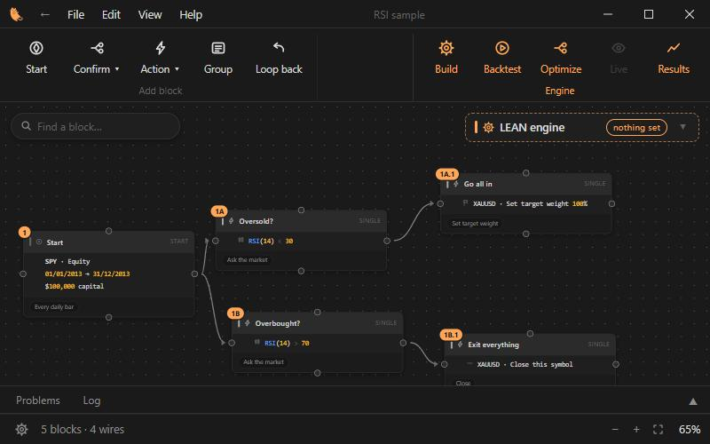
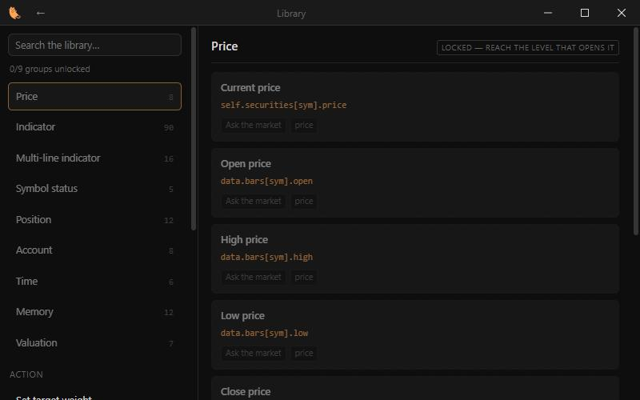
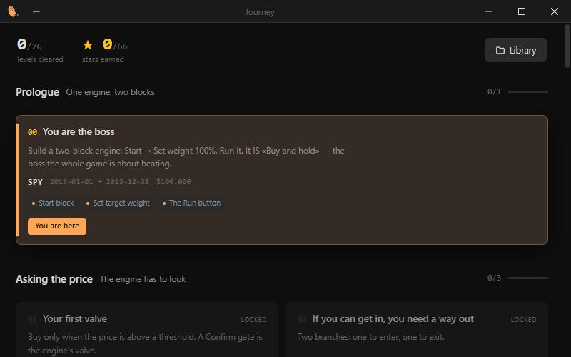
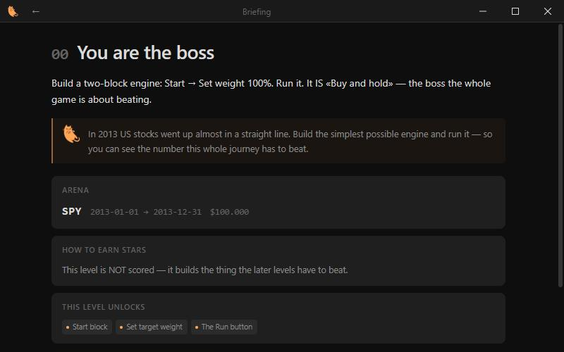
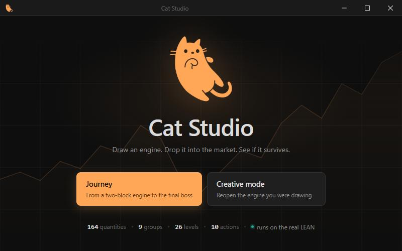

Instead of code,
you draw.Everything else is identical.
You draw a trading engine as a block diagram. Cat Studio turns it into a real QuantConnect algorithm and runs it on LEAN — the same engine QuantConnect runs. The drawing is the only thing that is new: the market data, the indicators, the order fills, the fees and every number you read are LEAN's.
Windows desktop app · runs on your own machine · no account, no server

Five blocks, four wires — and this is the algorithm they wrote.
Not a description of one. The real file Cat Studio hands to LEAN, straight from the diagram on the left. Nothing on this page was typed by hand.
"""Algorithm generated by Cat_Studio — RSI sample. DO NOT EDIT BY HAND: reopen the diagram in Cat_Studio and generate again; hand edits will be overwritten. Every LEAN line below comes straight from a block dictionary's `lean` field. """ from AlgorithmImports import * class RSISample(QCAlgorithm): def initialize(self): self.set_start_date(2013, 1, 1) self.set_end_date(2013, 12, 31) self.set_cash(100000) self.set_brokerage_model(BrokerageName.DEFAULT) self._ten = {} self._ten['SPY'] = self.add_equity( 'SPY', Resolution.DAILY).symbol self._ma = list(self._ten.values()) self._cb = {} for sym in self._ma: self._cb[sym] = {} self._cb[sym]['rsi_14'] = self.rsi(sym, 14) self.set_warm_up(14) def on_data(self, data): if self.is_warming_up: return for sym in self._ma: self._mot_ma(sym, data) def _mot_ma(self, sym, data): if (self._cb[sym]['rsi_14'].current.value < 30): # 1A · Oversold? # 1A.1 · Go all in self.set_holdings(sym, 1, False, tag='[1A.1] RSI(14) < 30') elif (self._cb[sym]['rsi_14'].current.value > 70): # 1B · Overbought? # 1B.1 · Exit everything self.liquidate(sym, tag='[1B.1] RSI(14) > 70')
tag on every order carries the block number and the condition that
fired it, so a fill in LEAN's log points back at the block that caused it.
Cat Studio does not compute anything about the market.
That is a rule the app is built on, not a slogan. It does three things — draw, check, translate — and hands the rest to LEAN. So the result is the result you would have got by writing the algorithm yourself.
- Every quantity is a real LEAN line. A block cannot exist unless it names the QuantConnect API behind it — the library shows the line next to each of the 164 quantities.
- The numbers are LEAN's. Fills, position sizing, lot sizes, margin, brokerage fees and slippage are computed by LEAN, never by the app.
- It runs on your machine. A LEAN build you point it at. No account, no server, nothing uploaded.
- The code stays readable. Open
main.pyand you can follow it — then edit it by hand in any editor if you want to leave the diagram behind.

Twenty-six levels, each one idea.
You do not open a blank canvas and 164 quantities on day one. Level 00 has you build the simplest possible engine — buy and hold — because that is the thing every later level has to beat.


The boss is buy and hold
Your engine's return is compared with holding the same symbol over the same dates. LEAN computes both. Beating it is the second star.
And a period you never saw
The third star re-runs your engine over dates the level never showed you. An engine tuned to fit the past loses it — which is the lesson.
Creative mode stays open
Every tool unlocked, nothing scored, the full window: ribbon, Optimize, a separate results window. The levels are how the app introduces itself, not a cage.
Counted, not estimated.
Run it from source, today.
There is no installer yet — see Good to know for exactly what is in the way. Cat Studio runs from a checkout on Windows, and it needs a LEAN build on the same machine.
- Clone the repository and run
tools\setup.batOnce, after cloning: it makes the virtual environment, installs the libraries and builds the web UI.
- Build LEAN, or point at one you already have
QuantConnect's LEAN is open source. Cat Studio also picks up a
Lean/folder sitting next to it, so a bundled build works without touching Settings. - Run
tools\chay.batThe app opens. In Settings, set the LEAN folder if it was not found.
- Draw, then press Backtest
Cat Studio generates
main.py, hands it to LEAN, and shows you what LEAN returned.
What it cannot do yet.
Is there an installer?
Not yet, and three things stand in the way. The LEAN build Cat Studio uses is
framework-dependent, so it needs .NET 10 present — bundling it means
building LEAN self-contained instead, about 70 MB more. LEAN runs Python
algorithms through pythonnet, so a Python runtime has to ship with it. And
LEAN's Data/ folder carries no licence file: the engine is
Apache-2.0, but that does not automatically cover the market data, so
QuantConnect has to be asked before any build ships with it.
Size is not the problem: the engine is 115 MB, and a level only needs the daily bars of its own symbols — 320 KB for three of them.
Which computers?
Windows. The app is Python with a web UI in a native window, and it has only been run on Windows 10 and 11.
Does it place real trades?
No. Cat Studio runs backtests on historical data. The Live button in the ribbon is there because LEAN has one, and it is switched off.
Do all 26 levels work?
Twenty-three of them. Levels 17, 18 and 19 ask about the company behind a
symbol — P/E, market cap, self-filtering universes — and that needs
QuantConnect's fine data, which is a paid feed. Those three levels
say so on their own card instead of failing quietly.
Can I stop using the diagram later?
Yes, and nothing is lost when you do. The generated main.py is an
ordinary QuantConnect algorithm: take it to the QuantConnect website, to your
own LEAN, or to any editor. The diagram is a way in, not a lock-in.
Does it use an LLM?
No. The diagram is translated by a generator that walks the blocks; every LEAN line it writes comes from the dictionary entry of the block that produced it. Nothing is sent anywhere.
Draw an engine. Drop it into the market.
See if it survives.
That is the whole app in one line, and it is what level 00 has you do in about two minutes.
